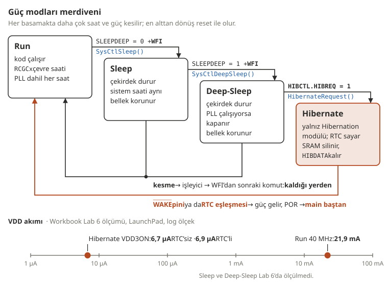
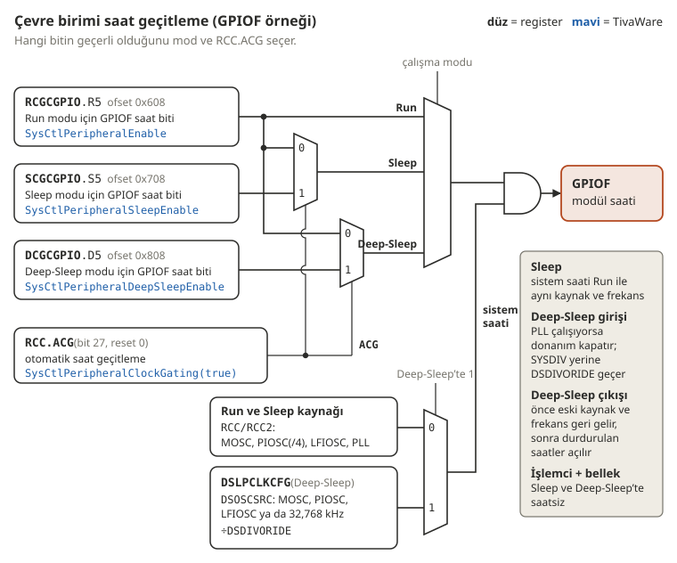
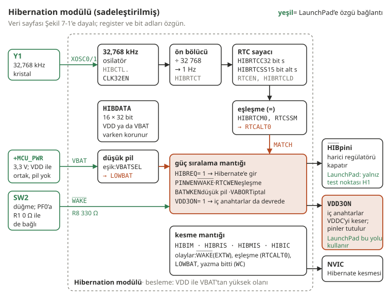
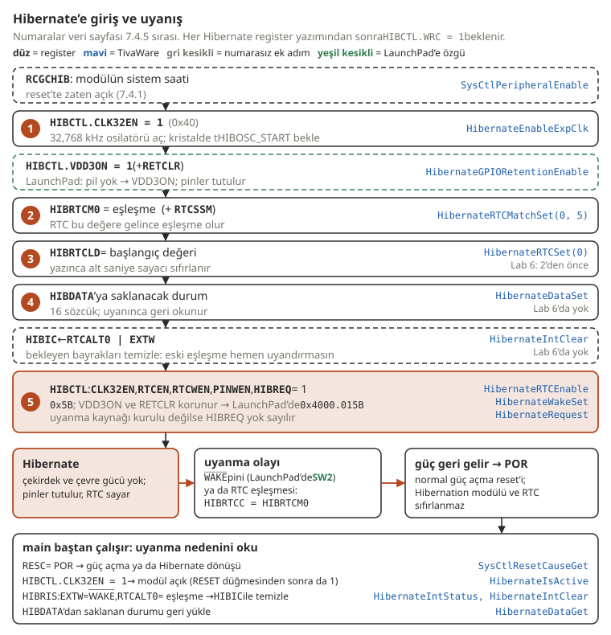
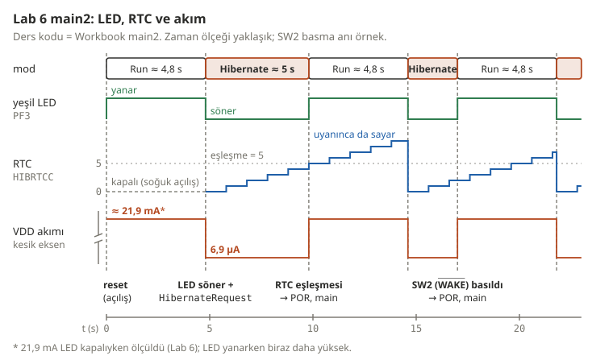

Uyku Modları ve Hazırda Bekletme (Hibernate)
Gömülü bir sistem zamanının çoğunu bir şey olmasını bekleyerek geçirir: bir tuşa basılmasını, bir sensör örneğini, bir sonraki dakikayı. O sırada işlemcinin boş döngüde dönmesi gereksiz güç harcar. TM4C123GH6PM'de dört çalışma modu vardır: Run, Sleep, Deep-Sleep ve Hibernate (Hazırda Bekletme). Her basamakta daha çok saat ve güç kesilir, buna karşılık uyanmak daha uzun sürer. En alttaki Hibernate'ten dönüş ise bir resettir. Bu notta modların nasıl seçildiğini, hangi register'ların neyi kapattığını, Hibernation modülünü ve dersteki altı projeyle iki ek dosyayı inceleyeceğiz.
Bu notun amacı, LaunchPad'de bir programın beklerken en az gücü harcamasını sağlamaktır: işe uygun mod seçilir, uykuda gereken birimler açık bırakılır, gerisi kapatılır ve uyanınca programın kaldığı yerden mi baştan mı başlayacağı bilinir. Bu notun sonunda öğrenci:
- Run, Sleep, Deep-Sleep ve Hibernate'te neyin durduğunu, neyin çalıştığını, nasıl uyanıldığını ve uyanınca ne olduğunu açıklayabilir. Akım değerlerini veri sayfasından ve Workbook ölçümünden okuyabilir.
- WFI komutunu, SYSCTRL'deki SLEEPDEEP ve SLEEPEXIT bitlerini, RCGC/SCGC/DCGC register'larını, RCC.ACG bitini ve DSLPCLKCFG'yi register düzeyinde ve TivaWare ile kullanabilir.
- Hibernation modülünün yapısını (32,768 kHz saat, RTC, eşleşme, WAKE pini, HIBDATA, VDD3ON, GPIO tutma, WRC) bilir. LaunchPad'de neden VDD3ON'un kullanıldığını söyleyebilir.
- Veri sayfasının 7.4.5'teki 5 adımlı sırasını API'siz ve API'li uygulayabilir. Her Hibernate register yazımından sonra WRC'yi bekler.
- Hibernate'ten çıkışın bir reset olduğunu bilir. Soğuk açılışı, RTC uyanmasını ve WAKE uyanmasını RESC, CLK32EN, HIBRIS ve HIBDATA ile ayırt eden bir program yazabilir.
- Ders kodlarındaki zayıflıkları bulabilir, TI Lab 6'da akımı ölçebilir, uyandırılamayan kartı kurtarabilir.
1. Neden düşük güç?
Amaç: dört modu ne durdurdukları, nasıl uyanıldığı ve kaç akım çektikleri açısından karşılaştırmak.
Veri sayfası mikrodenetleyicinin dört çalışma düzeyini tanımlar (§5.2.6, s. 227). Bu notta mod adları veri sayfasındaki gibi kullanılır: Run (çalışma), Sleep (uyku), Deep-Sleep (derin uyku), Hibernate (Hazırda Bekletme). Şekil 1 dört modu bir merdiven olarak gösterir. Aşağıdaki tablo ayrıntıları verir.

main'in başından başlar. Akım ekseni Workbook Lab 6'nın LaunchPad ölçümüdür. Sleep ve Deep-Sleep Lab 6'da ölçülmez.| Run | Sleep | Deep-Sleep | Hibernate (VDD3ON) | |
|---|---|---|---|---|
| Giriş | — | SLEEPDEEP = 0, WFI (SysCtlSleep) | SLEEPDEEP = 1, WFI (SysCtlDeepSleep) | HIBCTL.HIBREQ = 1 (HibernateRequest) |
| İşlemci ve bellek | Saatli, kod çalışır | Saatsiz, içerik korunur | Saatsiz, içerik korunur | Güç yok, SRAM silinir |
| Sistem saati | RCC/RCC2 (PLL dahil) | Run ile aynı kaynak ve frekans | DSLPCLKCFG seçer, PLL kapanır | Yok. Yalnız 32,768 kHz |
| Çevre birimleri | RCGC | ACG = 1: SCGC, ACG = 0: RCGC | ACG = 1: DCGC, ACG = 0: RCGC | Güç yok (Hibernation modülü hariç). Pinler tutulur |
| Uyandıran | — | İzinli her kesme | Saat alan bir birimin kesmesi | WAKE pini, RTC eşleşmesi (pil varsa düşük pil) |
| Uyanınca | — | İşleyici, sonra WFI'dan sonraki komut | Aynı. Önce Run saati geri gelir | POR, main baştan |
| Uyanma süresi | — | 2 sistem saati | 1,25 µs (PIOSC), 350 µs (LFIOSC), PLL ile TREADY | Uyanma + 500 µs (TVDD_CODE) |
| Akım, veri sayfası (25 °C, nominal) | 40 MHz: 19,7 mA (birimler kapalı) – 32,0 mA (hepsi açık) | 40 MHz: 7,60 – 19,7 mA | LFIOSC: 2,00 – 5,10 mA. Flash düşük güçte 1,07 mA | 4,33 µA (RTC kapalı), 4,49 µA (RTC açık) |
| Workbook Lab 6 ölçümü | 21,9 mA | — | — | 6,7 µA (RTC'siz), 6,9 µA (RTC'li) |
Akım değerleri Tablo 24-41'den (s. 1399–1401), uyanma süreleri Tablo 24-23 ve 24-26'dan (s. 1381, 1383) alınmıştır. Pil beslemeli Hibernate'te (VDD = 0 V, VBAT = 3 V) veri sayfası 1,38–1,40 µA verir, ama LaunchPad'de pil yuvası olmadığı için bu mod kullanılamaz (Bölüm 3).
Run ile Hibernate arasında yaklaşık 3 000 katlık fark vardır. Bu yüzden pil ömrünü uyku akımından çok uyanık geçen süre belirler (Alıştırma 6). Modlar arasındaki asıl ayrım uyanınca ne olduğudur: Sleep ve Deep-Sleep'te değişkenler ve ayarlar korunur, program kaldığı yerden sürer. Hibernate'te hepsi kaybolur. Saklanacak bilgi HIBDATA'ya yazılır.
2. Sleep ve Deep-Sleep
Amaç: iki uyku modunu seçen bitleri, uykuda hangi birimin saat alacağını ve Deep-Sleep'te sistem saatini öğrenmek.
WFI ve SYSCTRL
İki uyku modu da Cortex-M4'ün WFI (Wait For Interrupt) komutuyla girilir. Hangisine girileceğini SYSCTRL register'ındaki SLEEPDEEP biti seçer (§2.7, s. 114). ARM belgelerinde bu register'ın adı SCR'dir.
SYSCTRL (0xE000.ED10, RW, reset 0) | Bit | 1 olunca |
|---|---|---|
| SEVONPEND | 4 | Bekleyen her kesme, izinsiz olsa bile, WFE'den uyandırır |
| SLEEPDEEP | 2 | WFI Deep-Sleep'e girer (0: Sleep) |
| SLEEPEXIT | 1 | İşleyiciden Thread moduna dönerken işlemci hemen yeniden uyur (sleep-on-exit) |
Kaynak: veri sayfası s. 166–167. Başlık dosyasında NVIC_SYS_CTRL_R, TivaWare'de NVIC_SYS_CTRL (inc/hw_nvic.h).
WFI: uyanma koşulu o anda doğru değilse işlemci hemen uyur (s. 114). TivaWare'deCPUwfi()ya da yalnız onu çağıranSysCtlSleep()(sysctl.csatır 1707–1713).SysCtlDeepSleep: SLEEPDEEP = 1,WFI, uyanınca SLEEPDEEP = 0 (satır 1730–1746). SonrakiSysCtlSleepyanlışlıkla derin uykuya girmez.- Sleep-on-exit: SLEEPEXIT = 1 iken her işleyicinin (handler; ISR) sonunda işlemci Thread moduna dönmeden yeniden uyur. Bütün işi kesmelerde yapan programda boş
maindöngüsüne dönülmez (s. 114, 167).WFEbu derste kullanılmaz. - Yalancı uyanma olabileceği için uyku komutu bir döngüde olur:
while (1) { WFI; }(s. 114).
Saat geçitleme: RCGC, SCGC, DCGC ve ACG
Her çevre biriminin üç saat açma biti vardır: Run için RCGC, Sleep için SCGC, Deep-Sleep için DCGC. Bu register'lar System Control alanında 0x600, 0x700 ve 0x800 ofsetlerinden başlar (s. 227). Uykuda hangi grubun geçerli olacağını RCC register'ının ACG biti (Auto Clock Gating, bit 27, reset 0) belirler (s. 254):
| Mod | ACG = 0 (reset) | ACG = 1 | TivaWare |
|---|---|---|---|
| Run | RCGC | RCGC | SysCtlPeripheralEnable |
| Sleep | RCGC | SCGC | SysCtlPeripheralSleepEnable |
| Deep-Sleep | RCGC | DCGC | SysCtlPeripheralDeepSleepEnable |
| ACG'nin kendisi | RCC bit 27 | SysCtlPeripheralClockGating(true) | |
Port F için: RCGCGPIO 0x400F.E608 (s. 340), SCGCGPIO 0x400F.E708 (s. 362), DCGCGPIO 0x400F.E808 (s. 384), reset 0, Port F bit 5. Hibernation modülünün RCGCHIB, SCGCHIB ve DCGCHIB register'ları 1 ile başlar (s. 343, 365, 387). Eski RCGC2/SCGC2/DCGC2 register'ları yerine birime özgü olanlar önerilir (s. 227). Şekil 2 seçimi GPIOF için gösterir.

İki tuzak: ACG = 0 iken SCGC ve DCGC etkisizdir, RCGC'de açık her birim uykuda da saat alır. ACG = 1 iken SCGC/DCGC'de açılmamış birim uykuda saatsiz kalır. Kenar algılaması saatle çalıştığı için saatsiz bir GPIO portu buton kesmesi üretemez ve işlemciyi uyandıramaz.
Deep-Sleep saati: DSLPCLKCFG
Deep-Sleep'te sistem saatinin kaynağını ve bölücüsünü DSLPCLKCFG belirler (0x400F.E144, reset 0x0780.0000, s. 264–265). WFI anında PLL çalışıyorsa donanım PLL'i kapatır ve RCC/RCC2'deki SYSDIV yerine DSDIVORIDE'ı kullanır. Uyanınca önce Run'daki kaynak ve frekans geri getirilir, sonra durdurulan saatler açılır (s. 228).
| Alan | Bit | Değerler | TivaWare |
|---|---|---|---|
| DSDIVORIDE | 28:23 | 0x0 = /1 … 0x3F = /64. Reset 0x0F = /16 | SYSCTL_DSLP_DIV_1 … _64 |
| DSOSCSRC | 6:4 | 0x0 MOSC, 0x1 PIOSC (16 MHz), 0x3 LFIOSC (yaklaşık 30 kHz), 0x7 Hibernation modülünün 32,768 kHz saati | SYSCTL_DSLP_OSC_MAIN, _INT, _INT30, _EXT32 |
| PIOSCPD | 1 | 1: PIOSC'yi Deep-Sleep'te kapatma isteği | SYSCTL_DSLP_PIOSC_PD |
TivaWare: SysCtlDeepSleepClockSet(cfg) register'a doğrudan yazar (sysctl.c satır 3000–3006). Frekans = kaynak / (DSDIVORIDE + 1). Ders kodlarındaki SYSCTL_DSLP_DIV_1 | SYSCTL_DSLP_OSC_MAIN = 0, yani 16 MHz MOSC. MOSC'nin kaynak olabilmesi için Run'da da MOSC seçili olmalıdır (s. 265). En düşük akımı LFIOSC verir (Tablo 24-41, 25 °C, birimler kapalı: PIOSC 3,51 mA, LFIOSC 2,00 mA). Bedeli uyanma süresidir: Run PIOSC, uyku LFIOSC iken 350 µs, PLL kullanılıyorsa ayrıca TREADY (Tablo 24-23, s. 1381).
Deep-Sleep'te frekans değiştiği için uykuda sayan bir zamanlayıcının süresi de değişir (SysTick için SysTick notu).
Flash ve SRAM gücü: SLPPWRCFG, DSLPPWRCFG
Uykuda flash ve SRAM de düşük güce alınabilir (§5.2.6.4, s. 229–231): Sleep için SLPPWRCFG (0x400F.E188, s. 274–275), Deep-Sleep için DSLPPWRCFG (0x400F.E18C, s. 276–277), reset 0. FLASHPM (bit 5:4): 0x0 etkin, 0x2 düşük güç. SRAMPM (bit 1:0): 0x0 etkin, 0x1 bekleme, 0x3 düşük güç. TivaWare: SysCtlSleepPowerSet, SysCtlDeepSleepPowerSet (SYSCTL_FLASH_LOW_POWER 0x20, SYSCTL_SRAM_LOW_POWER 0x3). Deep-Sleep'te LFIOSC ve birimler kapalıyken akım 2,00 mA'den 1,07 mA'e iner (Tablo 24-41). Bedeli uyanma süresidir: 80 MHz'te Sleep'ten uyanma flash etkinken 0,28–0,30 µs, düşük güçteyken 105–109 µs (Tablo 24-24, s. 1381).
Ne uyandırır?
- Geçitlerinden geçen bir kesme (s. 115): çevre birimi maskesi (Geçit 1) ve NVIC izni (Geçit 2) açık olmalıdır (GPIO Kesmeleri notu). PRIMASK = 1 (Geçit 3 kapalı) iken kesme işlemciyi uyandırır, ama işleyici PRIMASK temizlenene kadar çalışmaz.
- Birim uykuda saat almalıdır: ACG = 1 iken SCGC/DCGC.
- WAKE pini: Run, Sleep ve Deep-Sleep'te de kesme üretebilir (HIBIM.EXTW, s. 503). SW2 bu kesmeyi de tetikler.
- EEPROM:
WFI'dan önce EEPROM'un meşgul olmadığı, yani EEDONE register'ındaki WORKING bitinin (0x400A.F018, bit 0) 0 olduğu doğrulanmalıdır (s. 228). Bu nottaki örnekler EEPROM kullanmaz. - Hata ayıklayıcı: JTAG/SWD bağlıyken (DAP etkin) Sleep ya da Deep-Sleep'ten uyanan çekirdek, çevre birimlerinin saatleri Run ayarına dönmeden kod çalıştırmaya başlayabilir. Saatsiz bir birime erişmek Hard Fault üretir. Veri sayfası uyandıran işleyicinin başına kısa bir gecikme döngüsü konmasını ya da kartın gücünün kesilip açılmasını önerir (s. 227). JTAG bağlıyken LDO uyku ayarları da uygulanmaz (s. 230).
3. Hibernation modülü
Amaç: güç kesildiğinde de çalışmaya devam eden modülün parçalarını ve LaunchPad'deki bağlantılarını tanımak.
Hibernation modülü, işlemci ve çevre birimleri boştayken onların gücünü tümüyle kesip yalnız kendisi beslenmeye devam eden bir bloktur (§7, s. 493). Gücü bir dış işaretle (WAKE pini) ya da kendi gerçek zaman saatiyle (RTC) belirli bir anda geri getirir. Taban adresi 0x400F.C000'dır. Kesme numarası 43'tür (vektör 59, INT_HIBERNATE). Özellikleri (s. 493): 32 bitlik saniye ve 15 bitlik alt saniye sayacı (1/32 768 s), eşleşme ve hız düzeltme (trim) register'ları; HIB pini ya da iç anahtarlarla (VDD3ON) iki güç denetim yolu; ayrı bir WAKE pini; düşük pil algılama; Hibernate'te GPIO durumunu tutma; 32,768 kHz kristal ya da osilatör; durum saklamak için 16 adet 32 bitlik sözcük (HIBDATA); RTC eşleşmesi, WAKE ve düşük pil kesmeleri.
64 bacaklı kılıfta modülün pinleri şunlardır (Tablo 7-1, s. 494–495): WAKE 32, HIB 33, XOSC0 34, GNDX 35, XOSC1 36, VBAT 37. LaunchPad'de 32,768 kHz kristal Y1 XOSC0/XOSC1'e bağlıdır. SW2, PF0'a R1 (0 Ω), WAKE'e R8 (330 Ω) üzerinden bağlıdır (şema s. 20). VBAT 3,3 V'a bağlıdır, pil yuvası yoktur (LaunchPad kılavuzu §2.2.2 s. 11–12; Workbook s. 6-4, 6-7). Şekil 3 modülün yapısını ve bu bağlantıları gösterir.

VBAT ve VDD3ON: LaunchPad'de hangisi?
Veri sayfası iki güç denetim yolu tanımlar (§7.3, s. 495; §7.3.7–7.3.8, s. 501):
- HIB pini ile: HIB, 3,3 V'u üreten harici regülatörün etkinleştirme girişine bağlanır. Hibernate'te regülatör kapanır, mikrodenetleyicinin bütün beslemesi kesilir. Modül bu sırada VBAT'tan (pil) beslenir. En düşük akım bu yoldadır.
- VDD3ON ile: HIBCTL.VDD3ON = 1 iken VDD beslemesi kalır, iç anahtarlar çekirdeğin beslemesini (VDDC) ve çoğu analog ve sayısal bloğu keser. Pinler Hibernate'e girmeden önceki durumlarında tutulur: giriş giriş kalır, yüksek sürülen çıkış yüksek kalır (s. 501, 512).
LaunchPad'de pil olmadığı için kartın kullanıcı kılavuzu VDD3ON yolunun kullanılması gerektiğini söyler (§2.2.2, s. 12). Veri sayfası, VDD3ON = 1 iken de HIB işaretinin Hibernate'te etkin olduğunu ve bu durumda HIB'in 3,3 V regülatörüne bağlanmaması gerektiğini belirtir (s. 512).
TivaWare'de VDD3ON için ayrı bir fonksiyon yoktur. HibernateGPIORetentionEnable() HIBCTL'e VDD3ON | RETCLR yazar (hibernate.c satır 1336–1347). Yani adı "GPIO tutma" olan bu çağrı, LaunchPad'de VDD3ON modunu açan çağrıdır. Workbook Lab 6'daki ve bütün ders kodlarındaki Hibernate programları bu çağrıyı içerir.
32,768 kHz saat ve WRC
Modül, RTC kullanılmasa bile sistem saatinden bağımsız bir 32,768 kHz saatle sürülmelidir (§7.3.2, s. 496). Saat HIBCTL.CLK32EN biti ile açılır ve bu bit diğer bütün Hibernate register'larına erişmeden önce 1 yapılmalıdır. Kristal kullanılıyorsa CLK32EN yazıldıktan sonra kristalin oturması için tHIBOSC_START kadar beklenir. Bu süre nominal 600 ms, en çok 1 500 ms'dir (Tablo 24-17, s. 1375). Ayrıca modülün sistem saati açıldıktan sonra 3 sistem saati beklenir (s. 505).
Modül ayrı bir saat alanında çalıştığı için register'larına art arda yazılamaz (§7.3.1, s. 495). Her yazmadan sonra, ve bir yazmanın ardından okumadan önce, HIBCTL'nin WRC (bit 31) biti 1 olana kadar beklenir. WRC = 0 iken yapılan yazma yok sayılır (s. 505) ya da tanımsız sonuç verir (s. 510). Art arda okumalarda bekleme gerekmez. TivaWare bu beklemeyi _HibernateWriteComplete() ile her Hibernate fonksiyonunun sonunda yapar (hibernate.c satır 107–115). API'siz kodda aynı işi bir yardımcı fonksiyon yapar (6.4).
HibernateEnableExpClk(ui32HibClk) parametreyi kullanmaz, CLK32EN'i 1 yapıp WRC'yi bekler (satır 138–149). Bu bekleme 7.4.1'deki WC beklemesiyle aynıdır (HIBRIS.WC = WRC kuruldu, s. 514, 516): soğuk açılışta osilatör çalışana kadar sürer. Kristal yoksa program burada takılır.
RTC: sayaç, alt saniye, eşleşme
32 768 Hz'lik saat 15 bitlik ön bölücüyle 1 Hz'e indirilir ve 32 bitlik saniye sayacını artırır (§7.3.5, s. 499). RTCEN = 1 olunca sayaçlar yukarı sayar, Hibernate'te de sayar.
- HIBRTCC (0x000, RO): saniye sayacı. Değeri HIBRTCLD'ye (0x00C) yazılarak verilir, bu yazma alt saniyeyi de sıfırlar.
- HIBRTCSS (0x028): RTCSSC (14:0) alt saniye sayımı, RTCSSM (30:16) alt saniye eşleşmesi. Tutarlı okuma: HIBRTCC, RTCSSC, yeniden HIBRTCC. İki HIBRTCC eşitse okuma geçerlidir.
- HIBRTCM0 (0x004, reset
0xFFFF.FFFF): HIBRTCC = HIBRTCM0 ve RTCSSC = RTCSSM olunca HIBRIS.RTCALT0 kurulur. RTCWEN = 1 ise uyandırır, HIBIM.RTCALT0 = 1 ise kesme üretir. - HIBRTCT (0x024, reset
0x7FFF): 64 saniyede bir kullanılan ön bölücü değeri. Büyütmek RTC'yi yavaşlatır (s. 500).
RTC açıkken yalnız VDD ve VBAT'ın birlikte kesildiği soğuk POR RTC'yi sıfırlar, RESET ya da BOR dokunmaz (s. 499). LaunchPad'de USB kablosunu çıkarmak soğuk POR'dur.
- Eşleşme temizlemeden önceliklidir. HIBRTCC = HIBRTCM0 iken HIBIC'e yazmak RTCALT0'ı temizlemez. Önce HIBRTCLD'ye yeni değer yazılır, sonra temizlenir.
- RTCWEN = 1 ve HIBRIS.RTCALT0 = 1 iken HIBREQ yazılırsa modül hemen uyanır. Veri sayfası bunu önlemek için HIBREQ'ten önce HIBIC'e RTCALT0 yazılmasını önerir. Workbook Lab 6 ve ders kodları bu temizlemeyi yapmaz, ama Workbook döngünün 5 s kapalı kalarak tekrarladığını bildirir (s. 6-15). Bu, anında uyanmanın eşleşme koşulu (HIBRTCC = HIBRTCM0 ve RTCSSC = RTCSSM, s. 499, 502) o anda geçerliyken olduğunu düşündürür: Lab'da istekten hemen önce HIBRTCLD'ye 0 yazıldığı için RTC 0'dır, eşleşme 5'tedir ve koşul geçerli değildir. Ayrıca HIBRIS bitleri Hibernate'e girerken temizlenir (s. 516). Veri sayfası iki durumu açıkça ayırmadığı için bu notun örnekleri temizlemeyi yapar.
HIBDATA: Hibernate'te korunan bellek
HIBDATA 16 adet 32 bitlik sözcüktür (64 bayt), ofset 0x030–0x06F (§7.3.6, s. 501; s. 523). VDD ya da VBAT var oldukça korunur, ikisi birden kesilirse kaybolur, reset değeri tanımsızdır. Her yazmadan sonra WRC beklenir, okumalar beklemesizdir. TivaWare karşılıkları HibernateDataSet(dizi, n) ve HibernateDataGet(dizi, n)'dir. Bunların ASSERT'i başka aileler için 64 sözcüğe izin verir, TM4C123GH6PM'de 16 sözcük vardır. LaunchPad'de RESET düğmesi HIBDATA'yı silmez, USB kablosunu çıkarmak siler. Verinin geçerli olup olmadığı bir imza sözcüğüyle denetlenir (6.6).
GPIO tutma (retention)
VDD3ON modunda pinler Hibernate boyunca son durumlarında tutulur. Uyku akımı ölçülürken LED'lerin sönük olması bu yüzden önemlidir. Veri sayfası §7.3.3, güç yeniden gelince tutmanın bırakıldığını ve GPIO'ların reset değerlerine döndüğünü yazar (s. 497). §7.3.8 ise RETCLR bitinden söz eder (s. 501), ama HIBCTL tablosunda bit 30:18 ayrılmıştır (s. 510) ve inc/tm4c123gh6pm.h'de RETCLR yoktur. Tanım yalnız TivaWare'in inc/hw_hibernate.h dosyasında, TM4C129'a özgü register'larla yan yanadır. Workbook Lab 6'da LED uykudan önce sönüktür, HibernateGPIORetentionDisable() çağrılmaz ve uyanınca yeşil yanar (s. 6-11, 6-15). qs-rgb de bu çağrıyı yapmaz. Bu kanıtlar TM4C123'te tutmanın POR ile bırakıldığını gösterir. RETCLR büyük olasılıkla TM4C129'dan kalmadır. HibernateGPIORetentionDisable() burada gerekmez ama zararsızdır. Bu notun örnekleri TivaWare'in önerdiği sırayı (hibernate.c satır 1318–1335) yine de izler: uyanışta GPIO ayarlanır, tutma bırakılır, Hibernate'ten hemen önce yeniden açılır.
Kesme ve durum register'ları
Dört register aynı bit düzenini kullanır (s. 514–520): HIBIM (maske, 0x014), HIBRIS (ham durum, 0x018, RO), HIBMIS (maskeli durum, 0x01C, RO), HIBIC (temizleme, 0x020, RW1C).
| Bit | Ad | Olay | TivaWare |
|---|---|---|---|
| 4 | WC | WRC kuruldu (yazma bitti) | HIBERNATE_INT_WR_COMPLETE |
| 3 | EXTW | WAKE pini etkin oldu | HIBERNATE_INT_PIN_WAKE |
| 2 | LOWBAT | VBAT eşiğin altına düştü | HIBERNATE_INT_LOW_BAT |
| 0 | RTCALT0 | RTC eşleşmesi | HIBERNATE_INT_RTC_MATCH_0 |
- HIBRIS bitleri HIBIC'e 1 yazılarak ya da Hibernate'e girilerek temizlenir (s. 516). Uyanıştan sonra HIBRIS'te görülen bit, uyandıran olayı gösterir.
- EXTW, WAKE pini Run, Sleep ya da Deep-Sleep'te etkin olunca da PINWEN'den bağımsız olarak kurulur (s. 516).
- HIBIC okunurken ham durumu döndürür (s. 520). TivaWare'in
HibernateIntClear'ıHWREG(HIB_IC) |= bayraklaryazdığı için o anda bekleyen bütün bitleri temizler (satır 1263–1284). - WC biti sistem saati alanındadır, CLK32EN'den önce yazılabilir. 7.4.1 kristalin oturmasını bu bitle bekler (s. 503, 514).
Register özeti
Register haritası Tablo 7-3'tedir (s. 505–506): HIBRTCC 0x000 (RO, 0), HIBRTCM0 0x004 (RW, 0xFFFF.FFFF), HIBRTCLD 0x00C (RW, 0), HIBCTL 0x010 (RW, 0x8000.2000), HIBIM 0x014, HIBRIS 0x018, HIBMIS 0x01C, HIBIC 0x020, HIBRTCT 0x024 (0x0000.7FFF), HIBRTCSS 0x028, HIBDATA 0x030–0x06F. HIBCTL'nin bitleri (s. 510–513):
| Bit | Ad | 1 olunca |
|---|---|---|
| 31 | WRC | (RO) Yazmaya hazır. Reset 1 |
| 30 | RETCLR | GPIO tutma (yalnız TivaWare tanımı; veri sayfası tablosunda ayrılmış) |
| 17 | OSCDRV | Yüksek sürme (24 pF) |
| 16 | OSCBYP | Tek uçlu dış osilatör |
| 14:13 | VBATSEL | Düşük pil eşiği: 1,9 / 2,1 (reset) / 2,3 / 2,5 V |
| 10 | BATCHK | Pil ölçümünü başlat |
| 9 | BATWKEN | Düşük pilde uyan |
| 8 | VDD3ON | İç anahtarlar kullanılır, pinler tutulur |
| 7 | VABORT | Pil düşükse Hibernate'e girme |
| 6 | CLK32EN | 32,768 kHz saat açık (gerekli) |
| 4 | PINWEN | WAKE pini Hibernate'ten uyandırır |
| 3 | RTCWEN | RTC eşleşmesi Hibernate'ten uyandırır |
| 1 | HIBREQ | Hibernate isteği. Uyanınca donanım temizler |
| 0 | RTCEN | RTC sayar |
PINWEN ve RTCWEN ikisi de 0 iken HIBREQ yok sayılır, flash yazması sürüyorsa geçiş ertelenir (§7.3.9, s. 501). HIBCTL istekten önce son yazılan register olmalıdır (s. 510). Modülün register'ları yalnız RTCEN ve PINWEN temizken bir sistem resetinde ya da soğuk POR'da sıfırlanır (s. 505).
4. Hazırda Bekletme'den çıkış bir resettir
Amaç: uyanınca programın baştan başladığını ve uyanma nedeninin nasıl bulunduğunu görmek.
Bir uyanma olayı (WAKE ya da RTC eşleşmesi) gelince HIB bırakılır ve VDD yeterli olunca mikrodenetleyici normal bir güç açma reseti (POR) yapar. Bu reset Hibernation modülünü sıfırlamaz, geri kalan her şeyi sıfırlar (§7.3.10, s. 501–502). Program main'in başından başlar, HibernateRequest()'ten sonraki while(1)'e dönülmez. SRAM, yığın, GPIO, saat ve kesme ayarları kaybolur. Modülün register'ları, RTC, HIBDATA ve HIBRIS korunur. Bir Hibernate işleyicisi Hibernate sırasında çalışamaz. Uyanıştan sonra HIBRIS'te kalan bayrak, kesme açılır açılmaz işleyiciyi çalıştırabilir (0b3).
Uyanma nedenini ayırt etmek
Veri sayfası, açılışın Hibernate'ten uyanmayla mı olduğunu HIBRIS'e ve HIBDATA'daki durum verisine bakarak anlamayı önerir (s. 502–503). Dört gösterge birlikte kullanılır:
| Gösterge | Soğuk açılış (USB takıldı) | RESET düğmesi, hata ayıklayıcı | RTC ile uyanış | WAKE (SW2) ile uyanış |
|---|---|---|---|---|
RESC (SysCtlResetCauseGet) | POR | EXT (ya da SW) | POR | POR |
HIBCTL.CLK32EN (HibernateIsActive) | 0 | Önceden açıksa ve RTCEN/PINWEN = 1 ise 1 | 1 | 1 |
HIBRIS (HibernateIntStatus(false)) | 0 | Önceki değer | RTCALT0 = 1 | EXTW = 1 |
| HIBDATA | Tanımsız | Korunur | Korunur | Korunur |
driverlib/sysctl.h'de SYSCTL_CAUSE_HIB (0x40) tanımlıdır, ama TM4C123GH6PM'nin RESC'inde bu bit yoktur: bitler MOSCFAIL (16), WDT1 (5), SW (4), WDT0 (3), BOR (2), POR (1), EXT (0), bit 15:6 ayrılmış (s. 252). Hibernate'ten uyanış RESC'te yalnız POR olarak görünür. RESC yine de RESET düğmesini (EXT) ayırır. Bitleri yapışkandır, 0 yazılarak temizlenir. POR diğer bitleri temizler (s. 213–214, 252).
LaunchPad'in hazır programı qs-rgb.c (TivaWare examples/boards/ek-tm4c123gxl/qs-rgb, satır 549–625) aynı sırayı izler: RESC okunup temizlenir, RESC yalnız POR ve HibernateIsActive() doğruysa HibernateIntStatus(0) okunup temizlenir, HIBERNATE_INT_PIN_WAKE ya da HIBERNATE_INT_RTC_MATCH_0'a göre davranılır, durum HibernateDataGet ile geri yüklenir. Diğer her durum soğuk açılış sayılır. 6.6 aynı mantığı LED renkleriyle gösterir.
5. Başlatma adımları
Amaç: veri sayfasının Hibernate başlatma sırasını adım adım uygulamak.
Veri sayfası farklı uyanma kaynakları için ayrı sıralar verir (§7.4, s. 503–505). LaunchPad'de RTC ya da WAKE ile uyanma için 7.4.5'teki beş adım kullanılır. Bu nottaki tablo, Şekil 4 ve kod yorumlarındaki adım numaraları bu beş adımdır. Numarasız satırlar veri sayfasının sırasına LaunchPad ve uyanış için eklenmiştir.
| Adım | İş | Register (veri sayfası) | TivaWare |
|---|---|---|---|
| — | Modülün sistem saati | RCGCHIB bit 0 (reset 1), PRHIB. Ardından 3 sistem saati (s. 505) | SysCtlPeripheralEnable(SYSCTL_PERIPH_HIBERNATE) |
| 1 | 32,768 kHz osilatörü aç | HIBCTL.CLK32EN = 1 (0x40). Kristal oturana kadar bekle: 7.4.1'e göre HIBIM.WC = 1, sonra HIBMIS.WC = 1 beklenir (WRC beklemesi kristali de bekler). CLK32EN zaten 1 ise modül açıktır, bu adım atlanabilir (s. 503) | HibernateEnableExpClk(…) (WRC'yi bekler) |
| — (LaunchPad) | VDD3ON ve GPIO tutma | HIBCTL |= VDD3ON | RETCLR | HibernateGPIORetentionEnable() |
| 2 | Eşleşme değeri | HIBRTCM0 = saniye, HIBRTCSS.RTCSSM = alt saniye | HibernateRTCMatchSet(0, n), HibernateRTCSSMatchSet |
| 3 | RTC başlangıç değeri | HIBRTCLD = değer (alt saniye sıfırlanır) | HibernateRTCSet(değer) |
| 4 | Saklanacak durum | HIBDATA, ofset 0x030–0x06F | HibernateDataSet(dizi, n) |
| — | Eski bayrakları temizle | HIBIC ← RTCALT0 | EXTW | HibernateIntClear(…) (Lab 6'da yok) |
| 5 | RTC'yi başlat, uyanma kaynaklarını seç, iste | CLK32EN, RTCEN, RTCWEN, PINWEN, HIBREQ = 1: 0x5B. VDD3ON ve RETCLR korunur, LaunchPad'de 0x4000.015B | HibernateRTCEnable(), HibernateWakeSet(HIBERNATE_WAKE_PIN | HIBERNATE_WAKE_RTC), HibernateRequest() |
| — (uyanış) | POR, main baştan, uyanma nedeni | RESC, HIBCTL.CLK32EN, HIBRIS, HIBDATA; sonra HIBIC | SysCtlResetCauseGet, HibernateIsActive, HibernateIntStatus(false), HibernateDataGet, HibernateIntClear |
Kurallar: her Hibernate register yazımından sonra WRC = 1 beklenir. 5. adımdan önce eski RTCALT0 ve EXTW bayrakları HIBIC'e yazılarak temizlenir (RTCALT0: s. 500; EXTW'yi bu not ekler). Yalnız RTC ile uyanmada son yazma 0x4B (7.4.3), yalnız WAKE ile uyanmada 0x52'dir (7.4.4). 7.4.2 ise Hibernate olmadan yalnız RTC eşleşme kesmesi kurar (HIBIM.RTCALT0, sonra HIBCTL = 0x41).

main'in başından yeniden başlar.6. Örnekler
Örnekler LaunchPad içindir ve TivaWare 2.1.4 başlıklarıyla clang -Wall altında uyarısız derlenir. API'siz örnekler inc/tm4c123gh6pm.h'nin register adlarını kullanır ve işleyiciyi startup dosyasındaki tabloya bağlar (SysTick notu, Yol 1). API'li örnekler driverlib fonksiyonlarını kullanır.
6.1 Sleep, API'siz API'siz
Amaç: SW1'e her basışta uyanan, işini yapıp yeniden uyuyan en kısa program. Uykuda Port F'nin saat alması için SCGCGPIO ve ACG kurulur.
// Bu not için hazırlandı. Sleep, API'siz: SW1 (PF4) düşen kenar kesmesiyle uyanır.
// Saat kodu yok: sistem saati reset sonrasındaki PIOSC 16 MHz'tir.
// İşleyici startup dosyasındaki tablodan bağlanır (tm4c123gh6pm_startup_ccs.c):
// extern void PortF_Isleyici(void); ve "GPIO Port F" satırına PortF_Isleyici
#include <stdint.h>
#include "inc/tm4c123gh6pm.h"
#define SW1 0x10u // PF4
#define KIRMIZI 0x02u // PF1
volatile uint32_t g_uyanma = 0; // işleyici her basışta artırır
void PortF_Isleyici(void)
{
GPIO_PORTF_ICR_R = SW1; // bayrağı temizle (W1C, '=' ile)
GPIO_PORTF_DATA_R ^= KIRMIZI; // her basışta kırmızı LED değişir
g_uyanma++;
}
int main(void)
{
SYSCTL_RCGCGPIO_R |= 0x20; // Port F saati (Run)
while ((SYSCTL_PRGPIO_R & 0x20) == 0) { } // hazır olana kadar bekle
GPIO_PORTF_DIR_R = (GPIO_PORTF_DIR_R & ~SW1) | KIRMIZI;
GPIO_PORTF_PUR_R |= SW1; // buton için iç pull-up
GPIO_PORTF_DEN_R |= SW1 | KIRMIZI;
GPIO_PORTF_IS_R &= ~SW1; // kenar
GPIO_PORTF_IBE_R &= ~SW1; // tek kenar
GPIO_PORTF_IEV_R &= ~SW1; // düşen kenar
GPIO_PORTF_ICR_R = SW1; // eski bayrağı sil
GPIO_PORTF_IM_R |= SW1; // Geçit 1: çevre birimi maskesi
NVIC_EN0_R = 1u << 30; // Geçit 2: NVIC, kesme 30 (Port F)
// Geçit 3: PRIMASK reset sonrası zaten 0
// Uykuda hangi birim saat alsın? ACG = 1 iken Sleep'te SCGC geçerlidir.
SYSCTL_SCGCGPIO_R |= 0x20; // Port F Sleep'te de saatli
SYSCTL_RCC_R |= SYSCTL_RCC_ACG; // RCC bit 27: SCGC/DCGC kullan
NVIC_SYS_CTRL_R &= ~NVIC_SYS_CTRL_SLEEPDEEP; // WFI -> Sleep (Deep-Sleep değil)
while (1)
{
__asm volatile ("wfi"); // uyu; kesmede işleyici, sonra yine uyu
}
}Beklenen davranış: kırmızı LED her basışta değişir, aralarda işlemci Sleep'tedir. Sıçrama LED'i bazen iki kez değiştirebilir. SYSCTL_SCGCGPIO_R satırı silinirse ACG = 1 olduğu için Port F uykuda saatsiz kalır ve program ilk uykudan uyanamaz: ACG'nin etkisini görmenin en kolay deneyi.
6.2 Deep-Sleep, API'siz API'siz
Amaç: aynı programı Deep-Sleep ile yapmak. Fark üç satırdır: DSLPCLKCFG ile uyku saati, DCGCGPIO ile uykuda saat alacak birim, SYSCTRL.SLEEPDEEP ile mod seçimi.
// Bu not için hazırlandı. Deep-Sleep, API'siz: SW1 (PF4) ile uyanır.
// Run: PIOSC 16 MHz (reset). Deep-Sleep: LFIOSC (yaklaşık 30 kHz), /1.
// İşleyici 6.1'deki gibi startup tablosuna bağlanır.
#include <stdint.h>
#include "inc/tm4c123gh6pm.h"
#define SW1 0x10u // PF4
#define MAVI 0x04u // PF2
void PortF_Isleyici(void)
{
GPIO_PORTF_ICR_R = SW1;
GPIO_PORTF_DATA_R ^= MAVI; // her uyanışta mavi LED değişir
}
int main(void)
{
SYSCTL_RCGCGPIO_R |= 0x20;
while ((SYSCTL_PRGPIO_R & 0x20) == 0) { }
GPIO_PORTF_DIR_R = (GPIO_PORTF_DIR_R & ~SW1) | MAVI;
GPIO_PORTF_PUR_R |= SW1;
GPIO_PORTF_DEN_R |= SW1 | MAVI;
GPIO_PORTF_IS_R &= ~SW1;
GPIO_PORTF_IBE_R &= ~SW1;
GPIO_PORTF_IEV_R &= ~SW1;
GPIO_PORTF_ICR_R = SW1;
GPIO_PORTF_IM_R |= SW1;
NVIC_EN0_R = 1u << 30;
// 1) Deep-Sleep saati: DSOSCSRC = LFIOSC (6:4 = 0x3), DSDIVORIDE = 0 (/1)
SYSCTL_DSLPCLKCFG_R = SYSCTL_DSLPCLKCFG_O_30; // 0x0000.0030
// 2) Deep-Sleep'te saat alacak birimler: yalnız Port F
SYSCTL_DCGCGPIO_R |= 0x20;
SYSCTL_RCC_R |= SYSCTL_RCC_ACG; // ACG = 1 -> DCGC geçerli
// 3) İsteğe bağlı: flash'ı Deep-Sleep'te düşük güç kipine al (FLASHPM = 0x2)
SYSCTL_DSLPPWRCFG_R = 0x20;
// 4) WFI artık Deep-Sleep'e girsin
NVIC_SYS_CTRL_R |= NVIC_SYS_CTRL_SLEEPDEEP; // SYSCTRL bit 2
while (1)
{
__asm volatile ("wfi"); // EEPROM kullanılsaydı önce EEDONE.WORKING = 0 beklenirdi
}
}Beklenen davranış: mavi LED her basışta değişir. Uykuda Port F yaklaşık 30 kHz'lik LFIOSC ile kenar algılar. Uyanınca donanım PIOSC 16 MHz'i geri getirir. Uyanma 0,35–0,8 ms sürer (Tablo 24-23, 24-24; s. 1381–1382). DSLPPWRCFG satırı isteğe bağlıdır.
6.3 Sleep ve Deep-Sleep, API'li API'li
Amaç: iki modu TivaWare ile kurmak ve aynı programda ikisi arasında geçiş yapmak. SW2 (PF0) modu değiştirir, mavi LED Deep-Sleep'i gösterir.
// Bu not için hazırlandı. Sleep ve Deep-Sleep, API'li (TivaWare), 40 MHz.
// SW1 (PF4): kırmızı LED'i değiştirir. SW2 (PF0): Sleep <-> Deep-Sleep geçişi.
// Mavi LED yanıkken program Deep-Sleep'i, sönükken Sleep'i kullanır.
#include <stdint.h>
#include <stdbool.h>
#include "inc/hw_memmap.h"
#include "inc/hw_types.h"
#include "inc/hw_gpio.h"
#include "driverlib/sysctl.h"
#include "driverlib/gpio.h"
#include "driverlib/interrupt.h"
#define SW1 GPIO_PIN_4
#define SW2 GPIO_PIN_0
#define KIRMIZI GPIO_PIN_1
#define MAVI GPIO_PIN_2
volatile bool g_derin = false; // true: Deep-Sleep, false: Sleep
void PortF_Isleyici(void)
{
uint32_t durum = GPIOIntStatus(GPIO_PORTF_BASE, true);
GPIOIntClear(GPIO_PORTF_BASE, durum); // yalnız gelenleri temizle
if (durum & SW1) // bit testi: iki buton birlikte de işlenir
{
GPIOPinWrite(GPIO_PORTF_BASE, KIRMIZI,
GPIOPinRead(GPIO_PORTF_BASE, KIRMIZI) ^ KIRMIZI);
}
if (durum & SW2)
{
g_derin = !g_derin;
GPIOPinWrite(GPIO_PORTF_BASE, MAVI, g_derin ? MAVI : 0);
}
}
int main(void)
{
SysCtlClockSet(SYSCTL_SYSDIV_5 | SYSCTL_USE_PLL | SYSCTL_XTAL_16MHZ |
SYSCTL_OSC_MAIN); // 40 MHz
SysCtlPeripheralEnable(SYSCTL_PERIPH_GPIOF); // RCGCGPIO
while (!SysCtlPeripheralReady(SYSCTL_PERIPH_GPIOF)) { }
HWREG(GPIO_PORTF_BASE + GPIO_O_LOCK) = GPIO_LOCK_KEY; // PF0 kilidini aç
HWREG(GPIO_PORTF_BASE + GPIO_O_CR) |= SW2;
HWREG(GPIO_PORTF_BASE + GPIO_O_LOCK) = 0;
GPIOPinTypeGPIOOutput(GPIO_PORTF_BASE, KIRMIZI | MAVI);
GPIOPinTypeGPIOInput(GPIO_PORTF_BASE, SW1 | SW2);
GPIOPadConfigSet(GPIO_PORTF_BASE, SW1 | SW2, GPIO_STRENGTH_2MA,
GPIO_PIN_TYPE_STD_WPU);
GPIOIntTypeSet(GPIO_PORTF_BASE, SW1 | SW2, GPIO_FALLING_EDGE);
GPIOIntClear(GPIO_PORTF_BASE, SW1 | SW2);
GPIOIntRegister(GPIO_PORTF_BASE, PortF_Isleyici); // IntEnable(INT_GPIOF) dahil
GPIOIntEnable(GPIO_PORTF_BASE, SW1 | SW2);
SysCtlPeripheralSleepEnable(SYSCTL_PERIPH_GPIOF); // SCGCGPIO bit 5
SysCtlPeripheralDeepSleepEnable(SYSCTL_PERIPH_GPIOF); // DCGCGPIO bit 5
SysCtlDeepSleepClockSet(SYSCTL_DSLP_DIV_1 | SYSCTL_DSLP_OSC_INT30); // DSLPCLKCFG
SysCtlPeripheralClockGating(true); // RCC.ACG = 1
while (1)
{
if (g_derin)
{
SysCtlDeepSleep(); // SLEEPDEEP = 1, WFI, SLEEPDEEP = 0
}
else
{
SysCtlSleep(); // yalnız WFI
}
}
}Beklenen davranış: SW1 kırmızıyı değiştirir. SW2'den sonra mavi yanar ve uykular Deep-Sleep olur, PLL kapanır, uyanınca yeniden kilitlenir (TREADY). Lab 6 düzeneğiyle iki modun akımı ölçülebilir.
Dersteki 0b021 ve hafta0B01Sleep aynı işin ilk hâlidir (Bölüm 7). 6.3'ten farkları: uyku bir kez çağrılır, butonlar a==16 ile ayrılır, Deep-Sleep saati MOSC /1'dir (16 MHz), Sleep için SCGC yorumdadır, hazır bekleme yoktur ve driverlib/sysctl.c dosyası #include ile eklenir.
6.4 Hibernate, API'siz API'siz
Amaç: Bölüm 5'teki adımları register düzeyinde uygulamak. Her yazma WRC beklenerek yapılır. Süre için SysTick kullanılır (16 MHz'te RELOAD = 15 999 999, 1 s).
// Bu not için hazırlandı. Hazırda Bekletme (Hibernate), API'siz, LaunchPad (VDD3ON).
// Yeşil LED 3 s yanar, sonra uyunur. 5 s sonra RTC ya da SW2 (WAKE) uyandırır.
// Uyanış bir resettir: program her seferinde main'in başından başlar.
// Adım numaraları Bölüm 5'teki tabloyla aynıdır.
#include <stdint.h>
#include "inc/tm4c123gh6pm.h"
#define YESIL 0x08u // PF3
#define HIB_CTL_RETCLR 0x40000000u // bit 30 (TivaWare hw_hibernate.h, s.501)
static void hib_bekle(void) // WRC = 1 olana kadar bekle (s.495)
{
while ((HIB_CTL_R & HIB_CTL_WRC) == 0) { }
}
static void hib_yaz(volatile uint32_t *reg, uint32_t deger)
{
hib_bekle(); // önceki yazma bitti mi?
*reg = deger;
hib_bekle(); // bu yazma bitti mi?
}
static void bekle_s(uint32_t s) // SysTick ile s saniye (16 MHz PIOSC)
{
NVIC_ST_CTRL_R = 0;
NVIC_ST_RELOAD_R = 16000000u - 1u; // 1 s, 24 bite sığar
NVIC_ST_CURRENT_R = 0;
NVIC_ST_CTRL_R = NVIC_ST_CTRL_CLK_SRC | NVIC_ST_CTRL_ENABLE;
while (s--)
{
while ((NVIC_ST_CTRL_R & NVIC_ST_CTRL_COUNT) == 0) { }
}
NVIC_ST_CTRL_R = 0;
}
int main(void)
{
uint32_t ctl;
SYSCTL_RCGCGPIO_R |= 0x20; // Port F
SYSCTL_RCGCHIB_R |= 0x01; // Hibernation (reset değeri zaten 1)
while ((SYSCTL_PRGPIO_R & 0x20) == 0) { }
while ((SYSCTL_PRHIB_R & 0x01) == 0) { }
GPIO_PORTF_DIR_R |= YESIL;
GPIO_PORTF_DEN_R |= YESIL;
GPIO_PORTF_DATA_R = YESIL; // yeşil yanık: uyanık
// Adım 1: CLK32EN = 0 ise soğuk açılış: 32,768 kHz saati başlat (7.4.1)
if ((HIB_CTL_R & HIB_CTL_CLK32EN) == 0)
{
HIB_IM_R = HIB_IM_WC; // WC biti sistem saatinde, hemen yazılır
HIB_CTL_R = HIB_CTL_CLK32EN; // 0x40: osilatör girişini aç
while ((HIB_MIS_R & HIB_MIS_WC) == 0) { } // kristal oturdu, yazılabilir
hib_yaz(&HIB_IC_R, HIB_IC_WC);
hib_yaz(&HIB_IM_R, 0);
}
else // uyanış: pinleri GPIO'ya geri ver
{
hib_yaz(&HIB_CTL_R, HIB_CTL_R & ~(HIB_CTL_RETCLR | HIB_CTL_VDD3ON));
}
bekle_s(3);
hib_yaz(&HIB_RTCM0_R, 5); // Adım 2: eşleşme 5 s
hib_yaz(&HIB_RTCSS_R, 0); // RTCSSM = 0
hib_yaz(&HIB_RTCLD_R, 0); // Adım 3: RTC = 0, alt saniye sıfır
hib_yaz(&HIB_IC_R, HIB_IC_RTCALT0 | HIB_IC_EXTW); // eski bayraklar (s.500 notu)
hib_yaz(&HIB_DATA_R, 0x48494231u); // Adım 4: HIBDATA[0] = "HIB1" imzası
GPIO_PORTF_DATA_R = 0; // uyumadan önce LED söner
// Adım 5: VDD3ON + tutma, saat, RTC, iki uyanma kaynağı, sonra istek
ctl = HIB_CTL_RETCLR | HIB_CTL_VDD3ON | HIB_CTL_CLK32EN |
HIB_CTL_PINWEN | HIB_CTL_RTCWEN | HIB_CTL_RTCEN; // 0x4000.0159
hib_yaz(&HIB_CTL_R, ctl);
hib_yaz(&HIB_CTL_R, ctl | HIB_CTL_HIBREQ); // 0x4000.015B
while (1) { } // güç kesilene kadar bekle
}Beklenen davranış: yeşil 3 s yanar, kart uyur, 5 s sonra RTC uyandırır ve döngü baştan başlar. Uykuda SW2 hemen uyandırır. Soğuk açılışta yeşil süreye kristalin oturma süresi eklenir (en çok 1,5 s). Adım 5 iki yazmaya bölünmüştür: son yazma yalnız HIBREQ'i ekler.
6.5 Hibernate, API'li: ders kodu ve Lab 6 API'li
Dersteki 0b01 projesi, sürücüdeki rtchazirdabekletme2.txt ve Workbook Lab 6'nın main2.txt dosyası aynı programdır. Yalnız girintileri farklıdır. Yeşil LED yanar, yaklaşık 4,8 s beklenir, RTC 0'lanır, eşleşme 5 s'ye kurulur, LED söner ve kart uyur.
int main(void)
{
SysCtlClockSet(SYSCTL_SYSDIV_5|SYSCTL_USE_PLL|SYSCTL_XTAL_16MHZ|SYSCTL_OSC_MAIN);
SysCtlPeripheralEnable(SYSCTL_PERIPH_GPIOF);
GPIOPinTypeGPIOOutput(GPIO_PORTF_BASE, GPIO_PIN_1|GPIO_PIN_2|GPIO_PIN_3);
GPIOPinWrite(GPIO_PORTF_BASE,GPIO_PIN_1|GPIO_PIN_2|GPIO_PIN_3, 0x08);
SysCtlPeripheralEnable(SYSCTL_PERIPH_HIBERNATE);
HibernateEnableExpClk(SysCtlClockGet());
HibernateGPIORetentionEnable();
SysCtlDelay(64000000);
HibernateRTCSet(0);
HibernateRTCEnable();
HibernateRTCMatchSet(0,5);
HibernateWakeSet(HIBERNATE_WAKE_PIN | HIBERNATE_WAKE_RTC);
GPIOPinWrite(GPIO_PORTF_BASE,GPIO_PIN_3, 0x00);
HibernateRequest();
while(1)
{ }
}Her çağrının register karşılığı (TivaWare 2.1.4 hibernate.c; her Hibernate fonksiyonu sonunda WRC'yi bekler):
| Satır | Çağrı | Register etkisi | Adım |
|---|---|---|---|
| 18 | SysCtlPeripheralEnable(SYSCTL_PERIPH_HIBERNATE) | RCGCHIB bit 0 (zaten 1) | — |
| 19 | HibernateEnableExpClk(SysCtlClockGet()) | HIBCTL |= CLK32EN. Parametre kullanılmaz | 1 |
| 20 | HibernateGPIORetentionEnable() | HIBCTL |= VDD3ON | RETCLR | — (LaunchPad) |
| 21 | SysCtlDelay(64000000) | 192 000 000 çevrim = 4,8 s (40 MHz). Kristal de oturur | — |
| 22 | HibernateRTCSet(0) | HIBRTCLD = 0. Ayrıca TM4C123 haritasında olmayan HIB_LOCK'a (TM4C129 register'ı) yazar (satır 632–655) | 3 |
| 23 | HibernateRTCEnable() | HIBCTL |= RTCEN | 5'in parçası |
| 24 | HibernateRTCMatchSet(0, 5) | HIBRTCM0 = 5 | 2 |
| 25 | HibernateWakeSet(HIBERNATE_WAKE_PIN | HIBERNATE_WAKE_RTC) | HIBCTL'de PINWEN (0x10), RTCWEN (0x08) (satır 422–486) | 5'in parçası |
| 26 | GPIOPinWrite(…, GPIO_PIN_3, 0x00) | Yeşil LED söner. VDD3ON pinleri bu durumda tutar | — |
| 27 | HibernateRequest() | HIBCTL |= HIBREQ (satır 990–1001) | 5 |
Lab 6'nın ilk hâli (main1.txt, sürücüdeki hazirdabekletme.txt) RTC'siz, yalnız SW2 ile uyanır.
6.6 Uyanma nedeni ve HIBDATA sayacı API'li
Amaç: Bölüm 4'teki göstergelerle soğuk açılışı, RTC uyanmasını ve WAKE uyanmasını ayırmak, uyanma sayısını Hibernate boyunca HIBDATA'da saklamak.
// Bu not için hazırlandı. Uyanma nedenini ayırt eder, HIBDATA'da sayaç tutar (API'li).
// Mavi: soğuk açılış ya da reset Yeşil: RTC uyanması Kırmızı: WAKE (SW2)
// Renk 1 s yanar, sonra uyanma sayısı kadar (en çok 10) aynı renkte yanıp söner.
#include <stdint.h>
#include <stdbool.h>
#include "inc/hw_memmap.h"
#include "inc/hw_types.h"
#include "driverlib/sysctl.h"
#include "driverlib/gpio.h"
struct tm; // hibernate.h prototipleri için (time.h yerine)
#include "driverlib/hibernate.h"
#define KIRMIZI GPIO_PIN_1
#define MAVI GPIO_PIN_2
#define YESIL GPIO_PIN_3
#define LEDLER (KIRMIZI | MAVI | YESIL)
#define IMZA 0x48494231u // "HIB1": HIBDATA'daki verinin geçerli olduğunu gösterir
int main(void)
{
uint32_t veri[2]; // HIBDATA[0] = imza, HIBDATA[1] = uyanma sayısı
uint32_t neden, ris = 0, renk, i, n;
bool uyanis = false;
SysCtlClockSet(SYSCTL_SYSDIV_5 | SYSCTL_USE_PLL | SYSCTL_XTAL_16MHZ |
SYSCTL_OSC_MAIN); // 40 MHz: SysCtlDelay(1) = 3 çevrim = 75 ns
SysCtlPeripheralEnable(SYSCTL_PERIPH_GPIOF);
SysCtlPeripheralEnable(SYSCTL_PERIPH_HIBERNATE);
while (!SysCtlPeripheralReady(SYSCTL_PERIPH_GPIOF)) { }
while (!SysCtlPeripheralReady(SYSCTL_PERIPH_HIBERNATE)) { }
GPIOPinTypeGPIOOutput(GPIO_PORTF_BASE, LEDLER);
// Açılış kontrolü: uyanma nedeni. Hibernate'ten dönüş RESC'te POR olarak görünür.
neden = SysCtlResetCauseGet();
SysCtlResetCauseClear(neden);
if ((neden == SYSCTL_CAUSE_POR) && HibernateIsActive()) // CLK32EN = 1
{
uyanis = true;
ris = HibernateIntStatus(false); // HIBRIS: neden uyandık?
HibernateIntClear(ris);
}
if (uyanis)
{
HibernateDataGet(veri, 2);
if (veri[0] != IMZA) { veri[0] = IMZA; veri[1] = 0; }
veri[1]++;
if (ris & HIBERNATE_INT_PIN_WAKE) renk = KIRMIZI; // EXTW
else if (ris & HIBERNATE_INT_RTC_MATCH_0) renk = YESIL; // RTCALT0
else renk = MAVI | KIRMIZI; // beklenmedik
}
else
{
veri[0] = IMZA; veri[1] = 0;
renk = MAVI;
}
HibernateEnableExpClk(SysCtlClockGet()); // Adım 1: CLK32EN; soğukta WRC kristali bekler
HibernateGPIORetentionDisable(); // uyanıştan sonra pinleri GPIO'ya ver
GPIOPinWrite(GPIO_PORTF_BASE, LEDLER, renk);
SysCtlDelay(SysCtlClockGet() / 3); // ~1 s
n = (veri[1] > 10) ? 10 : veri[1];
for (i = 0; i < n; i++)
{
GPIOPinWrite(GPIO_PORTF_BASE, LEDLER, 0);
SysCtlDelay(SysCtlClockGet() / 15); // 0,2 s sönük
GPIOPinWrite(GPIO_PORTF_BASE, LEDLER, renk);
SysCtlDelay(SysCtlClockGet() / 15); // 0,2 s yanık
}
GPIOPinWrite(GPIO_PORTF_BASE, LEDLER, 0);
HibernateRTCEnable(); // RTCEN (5'in parçası; TivaWare RTCSet'ten önce ister)
HibernateRTCMatchSet(0, 5); // Adım 2
HibernateRTCSet(0); // Adım 3
HibernateIntClear(HIBERNATE_INT_RTC_MATCH_0 | HIBERNATE_INT_PIN_WAKE);
HibernateDataSet(veri, 2); // Adım 4
HibernateGPIORetentionEnable(); // LaunchPad: VDD3ON | RETCLR
HibernateWakeSet(HIBERNATE_WAKE_PIN | HIBERNATE_WAKE_RTC); // Adım 5: PINWEN | RTCWEN
HibernateRequest(); // HIBREQ
while (1) { }
}Beklenen davranış: USB takılınca LED, HibernateEnableExpClk kristalin oturmasını bekledikten sonra 1 s mavi yanar (sayaç 0), kart uyur. 5 s sonra RTC uyandırır: yeşil yanar ve bir kez yanıp söner. Her yeni uyanışta yanıp sönme sayısı bir artar. Uyku sırasında SW2'ye basılırsa kırmızı yanar. RESET düğmesinde RESC = EXT olduğu için mavi yanar ve sayaç 0'lanır. USB'yi çıkarmak HIBDATA'yı siler, imza tutmaz. struct tm; satırı, <time.h> eklenmediğinde hibernate.h'nin verdiği 4 clang uyarısını önler (Lab 6 ustdlib.h kullanır).
7. Ders kodları üzerinden inceleme
Derste kullanılan altı CCS projesi ve sürücüdeki iki metin dosyası vardır. İki proje Sleep/Deep-Sleep (0b021, hafta0B01Sleep), dördü Hibernate'tir (0b01, 0b3, hafta0B02hibarnate, hafta0csleep1ogr). Hepsi TivaWare kullanır. Kodlar olduğu gibi gösterilir, hatalar uyarı kutularında açıklanır. Satır numaraları orijinal dosyalara göredir. Yorumlar UTF-8'e çevrilmiş, sekmeler boşluğa açılmıştır.
Derleme (clang, -Wall, TivaWare 2.1.4): 0b021 ve hafta0B01Sleep uyarısızdır. 0b01, 0b3 ve iki metin dosyası ustdlib.h üzerinden <time.h> ister, onunla uyarısızdır. hafta0csleep1ogr 4 (struct tm), hafta0B02hibarnate 83 uyarı verir (79 makro yeniden tanımı, 4 struct tm). Projeler TivaWare 2.2.0.295 ile hazırlanmış ve driverlib.lib'i bağlar. O sürümde sayılar biraz farklı olabilir.
Sleep ve Deep-Sleep projeleri
0b021: Port F'nin iki butonu düşen kenarda kesme üretir. İşleyici SW1'de kırmızıyı, SW2'de maviyi yakar. main bir kez SysCtlDeepSleep() çağırır. hafta0B01Sleep aynı kurulumu kullanır (satır 47–69). Farkı, uykunun SetInitSettings()'in sonunda olması (satır 76–79) ve işleyicide TIMER0 için iki ek satırdır (satır 18 ve 24).
void SetInitSettings();
void haricikesme(void)
{
int a=GPIOIntStatus(GPIO_PORTF_BASE, true); // eğer burdan hangi pinden 1 gelmişsse kesme oluşmuştu
if(a==16) // pf4 basılmıştır
{
GPIOPinWrite(GPIO_PORTF_BASE,GPIO_PIN_1|GPIO_PIN_2|GPIO_PIN_3,2);
}
else if (a==1) // pf0 basılmıştır
{
GPIOPinWrite(GPIO_PORTF_BASE,GPIO_PIN_1|GPIO_PIN_2|GPIO_PIN_3,4);
}
GPIOIntClear(GPIO_PORTF_BASE, GPIO_PIN_0|GPIO_PIN_4);
}
// api li
int main(void)
{
SetInitSettings();
//SysCtlSleep();
SysCtlDeepSleep();
while(1)
{
}
}
void SetInitSettings()
{
SysCtlClockSet(SYSCTL_SYSDIV_5|SYSCTL_USE_PLL|SYSCTL_XTAL_16MHZ|SYSCTL_OSC_MAIN);
SysCtlPeripheralEnable(SYSCTL_PERIPH_GPIOF); // SYSCTL_RCGCGPIO_R|=0x20;
GPIOPinTypeGPIOOutput(GPIO_PORTF_BASE,GPIO_PIN_1|GPIO_PIN_2|GPIO_PIN_3); // pin 123 output
HWREG(GPIO_PORTF_BASE + GPIO_O_LOCK) = GPIO_LOCK_KEY;
HWREG(GPIO_PORTF_BASE + GPIO_O_CR) |= 0x01;
GPIOPinTypeGPIOInput(GPIO_PORTF_BASE,GPIO_PIN_0|GPIO_PIN_4); // pf4 input
GPIOPadConfigSet(GPIO_PORTF_BASE,GPIO_PIN_0|GPIO_PIN_4, GPIO_STRENGTH_4MA, GPIO_PIN_TYPE_STD_WPU);// pull up için
GPIOPinWrite(GPIO_PORTF_BASE,GPIO_PIN_1|GPIO_PIN_2|GPIO_PIN_3,0);
// //SysCtlSleepPowerSet(SYSCTL_FLASH_LOW_POWER|SYSCTL_SRAM_LOW_POWER);
// SysCtlPeripheralSleepEnable(SYSCTL_PERIPH_GPIOF);
// SysCtlPeripheralClockGating(true);
SysCtlDeepSleepClockSet(SYSCTL_DSLP_DIV_1|SYSCTL_DSLP_OSC_MAIN);
SysCtlPeripheralDeepSleepEnable(SYSCTL_PERIPH_GPIOF);
SysCtlPeripheralClockGating(true);
// interrupt kesme gpio
// 5 tane fonksiyon
// 2 tane global 3 tane local
IntMasterEnable(); // setb ea
IntEnable(INT_GPIOF); // portf kesmesi pin kesmesi yok
// 3 tane lokal
GPIOIntTypeSet(GPIO_PORTF_BASE,GPIO_PIN_0|GPIO_PIN_4, GPIO_FALLING_EDGE); // düşen kenar kesmesi
GPIOIntEnable(GPIO_PORTF_BASE, GPIO_PIN_0|GPIO_PIN_4); // pin 4 ile kesme aktif
GPIOIntRegister(GPIO_PORTF_BASE, haricikesme);
}- Uyku bir kez (0b021 satır 34, hafta0B01Sleep satır 79): ilk basışta işlemci uyanır, işleyiciden sonra boş
while(1)'de (iki projede satır 35–38) Run modunda kalır. Sonraki basışlar LED'i değiştirir ama işlemci bir daha uyumaz. Doğrusuwhile(1) { SysCtlDeepSleep(); }. hafta0B01Sleep'te uykunun "ayarlar" fonksiyonunun içinde olması akışı da gizler. a==16,a==1(0b021 satır 15, 19; hafta0B01Sleep 15, 21): iki bayrak birden kuruluysaa17 olur, iki dal da çalışmaz ve satır 25/27 olayı siler. Doğrusuif (a & GPIO_PIN_4).- TIMER0 (hafta0B01Sleep satır 18, 24):
SysCtlPeripheralSleepEnable/Disableyalnız SCGCTIMER bit 0'ı değiştirir. TIMER0 açılmamış ve kullanılmamıştır. Program Deep-Sleep kullandığı için SCGC hiç devreye girmez (ACG = 1 iken DCGC geçerli). Etkisizdir. IntEnable(INT_GPIOF)(0b021 satır 68, hafta0B01Sleep 64): gereksiz ama zararsız.GPIOIntRegister(satır 73 / 69) kesmeyi kendisi açar (gpio.c).- Hazır bekleme yok (0b021 satır 44 → 45, hafta0B01Sleep 48 → 49): araya
while (!SysCtlPeripheralReady(SYSCTL_PERIPH_GPIOF)) { }eklenmelidir (s. 227). #include "driverlib/sysctl.c"(satır 8): bu iki projede uyarı üretmez (tm4c123gh6pm.heklenmemiştir), ama gereksizdir: projedriverlib.lib'i bağlar. Satır bir eksikliği de gizler.IntMasterEnable,IntEnableveINT_GPIOF,sysctl.c'nin eklediğiinterrupt.hvehw_ints.h'den gelir..csilinirse bu iki başlık eklenir.
Doğru olan: SysCtlPeripheralDeepSleepEnable(SYSCTL_PERIPH_GPIOF) ile SysCtlPeripheralClockGating(true) birlikte kullanılmıştır, Port F uykuda saat alır. MOSC /1 geçerli bir Deep-Sleep saatidir, çünkü Run'da da MOSC kullanılır. LFIOSC ile tasarruf daha büyük olurdu.
Hibernate projeleri
0b01 6.5'te gösterildi. Sürücüdeki hazirdabekletme.txt Lab 6'nın ilk hâlidir, TivaWare belgelerinden alınmış İngilizce açıklamalar içerir. 0b3, 0b01'e bir Hibernate kesmesi ekler ve yalnız RTC ile uyanır:
void hiberkesme(){
uint32_t deger = HibernateIntStatus(1);
HibernateIntClear(deger);
GPIOPinWrite(GPIO_PORTF_BASE, GPIO_PIN_1|GPIO_PIN_2|GPIO_PIN_3, 2);
SysCtlDelay(20000000);
GPIOPinWrite(GPIO_PORTF_BASE, GPIO_PIN_1|GPIO_PIN_2|GPIO_PIN_3, 0);
HibernateRTCMatchSet(0,HibernateRTCGet()+5);
}
int main(void)
{
SysCtlClockSet(SYSCTL_SYSDIV_5|SYSCTL_USE_PLL|SYSCTL_XTAL_16MHZ|SYSCTL_OSC_MAIN);
SysCtlPeripheralEnable(SYSCTL_PERIPH_GPIOF);
GPIOPinTypeGPIOOutput(GPIO_PORTF_BASE, GPIO_PIN_1|GPIO_PIN_2|GPIO_PIN_3);
GPIOPinWrite(GPIO_PORTF_BASE,GPIO_PIN_1|GPIO_PIN_2|GPIO_PIN_3, 0x08);
SysCtlPeripheralEnable(SYSCTL_PERIPH_HIBERNATE);
HibernateEnableExpClk(SysCtlClockGet());
HibernateGPIORetentionEnable();
SysCtlDelay(64000000);
HibernateRTCSet(0);
HibernateRTCEnable();
HibernateRTCMatchSet(0,5);
HibernateWakeSet(HIBERNATE_WAKE_RTC);
HibernateIntRegister(hiberkesme);
HibernateIntEnable(HIBERNATE_INT_RTC_MATCH_0);
GPIOPinWrite(GPIO_PORTF_BASE,GPIO_PIN_3, 0x00);
HibernateRequest();
while(1)
{
}
}hafta0B02hibarnate: 50 MHz'te kırmızı LED 3 s yanar, sonra kart uyur.
int main(void)
{
SysCtlClockSet(SYSCTL_SYSDIV_4|SYSCTL_USE_PLL|SYSCTL_XTAL_16MHZ|SYSCTL_OSC_MAIN);
SysCtlPeripheralEnable(SYSCTL_PERIPH_GPIOF);
SysCtlPeripheralEnable(SYSCTL_PERIPH_HIBERNATE); // çevre birimi aktif
// hibernation modulune sahip bir m4 kullanıyoruz
GPIOPinTypeGPIOOutput(GPIO_PORTF_BASE, GPIO_PIN_1|GPIO_PIN_2|GPIO_PIN_3);
GPIOPinTypeGPIOInput(GPIO_PORTF_BASE, GPIO_PIN_4); //pin0 ve pin4 input
GPIOPadConfigSet(GPIO_PORTF_BASE, GPIO_PIN_4, GPIO_STRENGTH_4MA, GPIO_PIN_TYPE_STD_WPU); // pin0 ve pin4 pull-up
GPIOPinWrite(GPIO_PORTF_BASE, GPIO_PIN_1|GPIO_PIN_2|GPIO_PIN_3, 0);
HibernateEnableExpClk(SysCtlClockGet()); // 1. fonksyon
// amac uyandırma pini ile uykudan kaldırma
HibernateGPIORetentionEnable();// uyku modundan kaldtıgında pin durumlarını koırumaya yardımcı olur
HibernateRTCSet(0);//Sets the value of the real time clock (RTC) counter.
HibernateRTCEnable();
HibernateRTCMatchSet(0, 5); // counter 5, gelince 5 sn gecer
// floating point 1 saatlik
// mermory pwm
// dac ama dac yok
// dma
GPIOPinWrite(GPIO_PORTF_BASE, GPIO_PIN_1|GPIO_PIN_2|GPIO_PIN_3,2);
SysCtlDelay(50000000);
GPIOPinWrite(GPIO_PORTF_BASE, GPIO_PIN_1|GPIO_PIN_2|GPIO_PIN_3,0);
HibernateWakeSet(HIBERNATE_WAKE_PIN|HIBERNATE_WAKE_RTC); // uyandırma biçimi
// pf0 uyandırma pini
HibernateRequest(); // beni uyut
while(1)
{
}
}hafta0csleep1ogr: Hibernate ile GPIO kesmesi bir arada. İşleyici 0b021'dekiyle aynıdır (satır 12–27).
int main(void)
{
SetInitSettings();
GPIOPinWrite(GPIO_PORTF_BASE,GPIO_PIN_1|GPIO_PIN_2|GPIO_PIN_3,8);
SysCtlDelay(80000000);
GPIOPinWrite(GPIO_PORTF_BASE,GPIO_PIN_1|GPIO_PIN_2|GPIO_PIN_3,0);
HibernateRequest();
while(1)
{
}
}
void SetInitSettings()
{
SysCtlClockSet(SYSCTL_SYSDIV_5|SYSCTL_USE_PLL|SYSCTL_XTAL_16MHZ|SYSCTL_OSC_MAIN);
SysCtlPeripheralEnable(SYSCTL_PERIPH_GPIOF); // SYSCTL_RCGCGPIO_R|=0x20;
SysCtlPeripheralEnable(SYSCTL_PERIPH_HIBERNATE);
// 1 saati bilmesi gerekiyor
HibernateEnableExpClk(SysCtlClockGet());
HibernateGPIORetentionEnable(); // 2 bu uyudugunda gpio nun yetkilendirilemsi
SysCtlDelay(1000000*1.33);
HibernateRTCSet(0);
HibernateRTCEnable();
HibernateRTCMatchSet(0, 4); // 6 sn
HibernateWakeSet(HIBERNATE_WAKE_PIN|HIBERNATE_WAKE_RTC); // 3. nasıl uyanacagım şu anda sabit olarak pf0- 0b3, işleyici ne zaman çalışır? Hibernate'te işlemcinin gücü yoktur. İlk açılışta RTCALT0 = 0 olduğu için uyumadan önce de çalışmaz. RTC uyanışından sonraki POR'da modül sıfırlanmaz ve HIBRIS.RTCALT0 = 1 kalır (s. 499, 516). Satır 37 (NVIC) ve satır 38 (HIBIM, önceki turdan zaten 1 olabilir) açılınca bekleyen bayrak işleyiciyi hemen çalıştırır. Döngü: uyanış, yeşil 4,8 s, kırmızı 1,5 s, sönük yaklaşık 4,5 s.
- 0b3 satır 16 ve 19: işleyicide 1,5 s beklenir (60 000 000 çevrim, 40 MHz). Bekleme
main'e, işleyiciye yalnız bayrak konmalıdır. Satır 19 eşleşmeyi yaklaşık 6'ya taşır, satır 35'teki 5 etkisiz kalır. - 0b3 satır 36: yalnız
HIBERNATE_WAKE_RTC. Eşleşme kaçarsa SW2 kartı uyandıramaz (Bölüm 8). - hafta0B02hibarnate satır 21–22: yorumlar "pin0 ve pin4" der, yalnız PF4 ayarlanır ve okunmaz.
- hafta0B02hibarnate satır 45, hafta0csleep1ogr satır 66: uyandıran PF0 değil, Hibernation modülünün WAKE pinidir (bacak 32). SW2, PF0'a R1 (0 Ω), WAKE'e R8 (330 Ω) üzerinden bağlıdır (LaunchPad şeması s. 20). PF0'ın GPIO ayarı uyanmayı etkilemez.
- hafta0B02hibarnate satır 32–34 ve 42: RTC önce 0'lanır, sonra 3 s beklenir (
SYSCTL_SYSDIV_4: 50 MHz, 50 000 000 × 3 çevrim). Uyku RTC ≈ 3'te başlar ve yalnız yaklaşık 2 s sürer. Satır 34'teki "5 sn geçer" yorumu Hibernate süresi için doğru değildir. 0b01'deki sıra (önce bekle, sonra RTC) doğrudur. - hafta0csleep1ogr satır 64 ve 35: eşleşme 4, yorum "6 sn".
mainardından 240 000 000 çevrim (40 MHz'te 6 s) bekler. Uyku isteği geldiğinde RTC ≈ 6'dır, eşleşme geçmiştir. Bölüm 3'teki yoruma göre istek anında eşleşme koşulu geçerli değildir, anında uyanma olmaz. RTC bir daha 4'e gelmeyeceği için (32 bitlik sayaç) kart yalnız SW2 ile uyanır. Doğrusu RTC'yi beklemeden sonra kurmak ya daHibernateRTCMatchSet(0, HibernateRTCGet() + 4). - hafta0csleep1ogr satır 60:
1000000*1.33doubleolarak hesaplanıp 1 330 000'e çevrilir: 3 990 000 çevrim ≈ 0,1 s. Bu bekleme gereksizdir (HibernateEnableExpClkosilatörü zaten bekler), kayan nokta da gereksizdir. - hafta0csleep1ogr satır 81–87: GPIO kesmesi yalnız 6 s'lik Run penceresinde işe yarar. Hibernate'ten uyandıran WAKE pinidir.
- hafta0B02hibarnate satır 6 ve 9:
sysctl.c(dolayısıylahw_ints.h,hw_flash.h) iletm4c123gh6pm.hbirlikte: 78INT_…ve birFLASH_FMA_OFFSET_Myeniden tanımı, 79 uyarı. - Bütün Hibernate kodları: açılışta uyanma nedenine bakılmaz, RTC her açılışta 0'lanır, HIBDATA kullanılmaz, HIBRIS temizlenmez. Lab 6 da böyledir. Workbook HIBDATA'nın "nasıl uyandığını bilmesi gereken" uygulamalar için gerektiğini ekler (s. 6-11).
- hazirdabekletme.txt satır 36 ve 45–46:
HibernateEnableExpClk'in parametresi 2.1.4'te kullanılmaz.HIBERNATE_WAKE_GPIOve_RESETTM4C123'te yoktur.HibernateWakeSetbayrakları HIBCTL'e koşulsuz yazar (satır 434), yalnız HIB_IO kısmını TM4C129'da işler. İki değer de 0x10 içerdiğinden TM4C123'te PINWEN kurulur (WAKE_RESETayrılmış bit 20'yi de yazar).
Doğru olan: bütün Hibernate kodları HibernateGPIORetentionEnable() ile LaunchPad'e uygun VDD3ON modunu açar. 0b01'deki sıra uykuyu tam 5 s yapar.
8. TI Lab 6 uyarlaması TI Lab
Amaç: kartı Hibernate'e sokmak, WAKE pini ve RTC ile uyandırmak, Run ve Hibernate akımını ölçmek.
Workbook'un 6. bölümü ve Lab 6 "Low Power Modes" (s. 6-1 – 6-16) bu notun TI karşılığıdır. LaunchPad'de pil yuvası yoktur, VBAT 3,3 V'a bağlıdır. Bu yüzden Lab yalnız Run ve Hibernate (VDD3ON) modlarını, WAKE ve RTC ile uyanmayı ölçer (s. 6-7). Akım H24–H25 arasından, yani DEVICE USB girişinin yanındaki, 3,3 V'u MCU_PWR'a bağlayan VDD jumper'ından ölçülür (Workbook s. 6-4, 6-12; LaunchPad kılavuzu s. 12).
| Lab adımı (sayfa) | Yapılan | Bu notta |
|---|---|---|
| 1–5 (6-6 – 6-8) | Projeyi içe aktar, başlıklar, 40 MHz, yeşil LED yanık | utils/ustdlib.h <time.h>'yi getirir (6.6) |
| 6–7 (6-8, 6-9) | Modülü aç, CLK32EN, tutma, 4,8 s bekle, yalnız WAKE, LED'i söndür, HibernateRequest() | Adım 1, VDD3ON, adım 5. Workbook beklemeyi "4 saniye" der |
| 8–11 (6-11) | Çalıştır, LED sönünce SW2 ile uyandır | Hata ayıklayıcı Hibernate'te bağlantıyı kaybeder |
| 12–18 (6-12, 6-13) | LED satırını yoruma al, jumper yerine ampermetre, Run ve VDD3ON (RTC'siz) | Aşağıdaki tablo |
| 19–26 (6-13 – 6-15) | RTC'yi 0'la, aç, eşleşme 5, WAKE_PIN | WAKE_RTC; SW2 basılıyken yükle, VDD3ON (RTC'li) | 6.5'teki kod, Şekil 5 |
| 27–30 (6-16) | Jumper'ı tak, qs-rgb'yi LM Flash Programmer ile yükle | Yükleme boyunca SW2 basılı |
Akım ölçümü (adım 14–18 ve 25–26):
- Güç anahtarını DEVICE'a alın, VDD jumper'ını çıkarın, multimetrenin artı ucunu DEVICE USB'ye yakın uca bağlayın, 20 mA üstü DC akım kademesini seçin.
- Anahtarı DEBUG'a alın. İlk 4,8 s Run modudur, okuyun.
- Kart uyuyunca 10 µA kademesinde okuyun ve hemen mA kademesine dönün. Düşük kademede multimetrenin iç direnci işlemcinin uyanmasını engelleyebilir (s. 6-13, 6-15).
| Mod | Lab adımı | Workbook ölçümü | Veri sayfası, 25 °C nominal | Sizin ölçümünüz |
|---|---|---|---|---|
| Run, 40 MHz, LED sönük | 16 | 21,9 mA | 19,7 mA (birimler kapalı) – 32,0 mA (hepsi açık) | |
| Hibernate VDD3ON, RTC'siz | 17 | 6,7 µA | 4,33 µA | |
| Hibernate VDD3ON, RTC'li | 26 | 6,9 µA | 4,49 µA | |
| Sleep, 40 MHz (6.3, mavi sönük) | ek | — | 7,60 – 19,7 mA | |
| Deep-Sleep, LFIOSC (6.3, mavi yanık) | ek | — | 2,00 – 5,10 mA (LED akımı hariç) |
Son iki satır bu notun eklediği ölçümlerdir. 6.3'te LED akımı ölçüme karışır. Deep-Sleep satırında mavi LED'in akımı da okunur, karşılaştırma için LED satırları yoruma alınabilir.

main2 (ve ders kodu 0b01) zaman çizelgesi. Yeşil LED 4,8 s yanar (64 000 000 × 3 çevrim / 40 MHz). Workbook bu süreyi "yaklaşık 4 saniye" diye anlatır. RTC bu bekleme bittikten sonra 0'landığı için Hibernate tam 5 s sürer. Akım değerleri Workbook ölçümüdür. Run değeri LED sönükken ölçülmüştür (adım 16). LED yanarken biraz daha yüksektir (adım 25).- Belirti: CCS "Error connecting to the target" der ya da kart takılınca hiçbir şey olmaz. LaunchPad kılavuzu mikrodenetleyicinin Hibernate'te olabileceğini, programlanmış bir uyanma koşulunun sağlanması gerektiğini söyler (s. 11, dipnot 1).
- WAKE etkinse: SW2'yi basılı tutup yüklemeyi başlatın, hata ayıklama düğmeleri görününce bırakın. Bağlantı koptuysa SW2 basılıyken Retry (Workbook adım 13, 23). LM Flash Programmer'da da SW2 programlama bitene kadar basılı tutulur (adım 29).
- Yalnız RTC etkinse (0b3) ya da eşleşme kaçtıysa: SW2 işe yaramaz. USB kablosunu çıkarın: VBAT = VDD olduğu için bu soğuk POR'dur ve modül sıfırlanır (s. 502, 505). Program uyumadan önceki beklemesini yaparken (0b01'de 4,8 s) yüklemeyi başlatın.
- Uyanma kaynağı yoksa: HIBREQ yok sayılır (s. 501), kart uyumaz.
Uzantılar: 6.6 ile uyanma nedenlerini ayırın, 6.3 ile Sleep ve Deep-Sleep akımını ölçün.
9. Sık yapılan hatalar
- Hibernate'ten sonra kodun devam edeceğini sanmak: uyanış bir POR'dur.
HibernateRequest()'ten sonraki satırlar çalışmaz. Durum HIBDATA'da saklanır. - Uyanma nedenini RESC'te aramak: TM4C123'te RESC'in Hibernate biti yoktur.
SYSCTL_CAUSE_HIBbu yongada hiç kurulmaz. CLK32EN, HIBRIS ve HIBDATA kullanılır. - Hibernate register'larına WRC beklemeden yazmak: WRC = 0 iken yazma yok sayılır. API'siz kodda her yazma bir bekleme fonksiyonundan geçer.
- API'siz kodda CLK32EN'den sonra kristali beklememek: soğuk açılışta 600 ms nominal, en çok 1 500 ms. 7.4.1'deki WC (ya da WRC) beklemesi bunu sağlar.
- LaunchPad'de VDD3ON'u açmamak: pil olmadığı için kılavuz VDD3ON'u ister. TivaWare'de bunu
HibernateGPIORetentionEnable()yapar. - RTC'yi uzun bir beklemeden önce kurmak: uyku süresi kısalır ya da eşleşme geçmişte kalır (hafta0B02hibarnate, hafta0csleep1ogr). RTC uyku isteğinin hemen öncesinde kurulur ya da eşleşme
HibernateRTCGet() + nile verilir. - Eski RTCALT0 bayrağını bırakmak: veri sayfası RTCWEN ve RTCALT0 birlikte 1 iken HIBREQ'in hemen uyandırdığını yazar. HIBREQ'ten önce HIBIC temizlenir. Lab 6 bunun her zaman olmadığını düşündürse de temizlemek ucuz ve güvenlidir.
- ACG = 1 yapıp uyandıracak birimi SCGC/DCGC'de açmamak: birim uykuda saatsiz kalır, kesme gelmez, program uyanmaz. Tersi de olur: ACG = 0 iken SCGC/DCGC ayarları etkisizdir.
- Uykuyu bir kez çağırmak: ilk kesmeden sonra işlemci Run'da kalır.
WFIbir döngüde olmalıdır. - Ölçüm sırasında LED'i yanık bırakmak: VDD3ON pinleri tutar. Yanık bir LED mikroamper ölçümünü bozar.
10. Alıştırmalar
- Gecikme hesabı: 0b01 saati
SYSCTL_SYSDIV_2_5ile 80 MHz'e ayarlansaydı yeşil LED ne kadar yanardı? Hibernate süresi değişir miydi?Cevap
64 000 000 × 3 / 80 MHz = 2,4 s (flash bekleme durumları bu süreyi biraz uzatabilir,
sysctl.csatır 1805–1824). Hibernate süresi değişmez: RTC 32,768 kHz ile sayar ve sistem saatinden bağımsızdır. - Kod okuma: hafta0B02hibarnate kartı kaç saniye uyutur? İki farklı düzeltme önerin.
Cevap
RTC satır 32'de 0'lanır, satır 42'deki bekleme 50 MHz'te 3 s sürer. Uyku RTC ≈ 3'te başlar, eşleşme 5'tedir: yaklaşık 2 s. Düzeltme 1: satır 32–34'ü satır 43'ün sonrasına taşımak. Düzeltme 2: satır 34'ü
HibernateRTCMatchSet(0, HibernateRTCGet() + 5)yapıp satır 42'den sonraya almak. - Sleep-on-exit: 6.1'i,
mainkurulumdan sonra tek birWFIile bitecek ve sonraki bütün uykular donanımca yapılacak biçimde yeniden yazın.whiledöngüsüne bir LED satırı koyarsanız ne görürsünüz?Cevap
Kurulumun sonuna
NVIC_SYS_CTRL_R |= NVIC_SYS_CTRL_SLEEPEXIT;ve__asm volatile ("wfi");yazılır, ardından boşwhile (1) { }. İlk basıştan sonra işleyici biter bitmez işlemci yeniden uyur, Thread moduna dönmez. Döngüdeki LED satırı hiç çalışmaz (s. 114, 167). - HIBDATA: 6.6'yı, her WAKE uyanmasında uyku süresi 5 s artacak biçimde değiştirin (5, 10, 15 s …). RTC uyanmasında süre aynı kalsın.
İpucu
veri[3]dizisi kullanın,veri[2]süreyi tutsun. Soğuk açılıştaveri[2] = 5.ris & HIBERNATE_INT_PIN_WAKEiseveri[2] += 5.HibernateRTCMatchSet(0, veri[2])veHibernateDataSet(veri, 3). 16 sözcük sınırını aşmayın. - Gösterge tablosu: bir açılışta RESC =
0x01, CLK32EN = 1 ve HIBRIS =0x01okunuyor. Ne olmuştur? 6.6 bu açılışı nasıl sınıflar?Cevap
RESC = EXT: RESET düğmesi ya da hata ayıklayıcı. Hibernation modülü RTCEN/PINWEN açık olduğu için sıfırlanmamıştır (s. 505). HIBRIS'teki RTCALT0 önceki bir RTC uyanışından ya da çalışma sırasındaki bir eşleşmeden kalmıştır. RESC POR olmadığı için 6.6 bunu soğuk açılış sayar (mavi) ve sayacı 0'lar.
- Pil ömrü: bir cihaz 10 s'de bir uyanıyor, 0,1 s Run'da 21,9 mA, kalan 9,9 s Hibernate'te 6,9 µA çekiyor. Ortalama akım nedir? 220 mAh'lik bir pil kaç gün dayanır? Uyanık süre Lab 6'daki gibi 4,8 s ve uyku 5 s olsaydı?
Cevap
Ortalama = (0,1 × 21,9 + 9,9 × 0,0069) / 10 ≈ 0,226 mA. 220 / 0,226 ≈ 974 saat ≈ 40 gün. Lab 6 döngüsünde (4,8 × 21,9 + 5 × 0,0069) / 9,8 ≈ 10,7 mA, pil yaklaşık 20 saat dayanır. Ömrü uyku akımı değil uyanık süre belirler. Gecikme döngüleri yerine iş bitince hemen uyumak gerekir.
11. Kaynaklar
- Texas Instruments, Tiva TM4C123GH6PM Microcontroller Data Sheet (SPMS376E, Haziran 2014): §2.7 s. 114–115; SYSCTRL s. 166–167; §5.2.6 s. 227–231; RESC s. 213–214, 252; RCC s. 254; DSLPCLKCFG s. 264–265; SLPPWRCFG/DSLPPWRCFG s. 274–277; RCGC/SCGC/DCGC s. 340–387; Bölüm 7 Hibernation Module s. 493–523 (§7.3 s. 495–503, §7.4 s. 503–505, register'lar s. 505–523); Tablo 24-17 s. 1375; Tablo 24-23 ve 24-24 s. 1381–1382; Tablo 24-26 s. 1383; Tablo 24-41 s. 1399–1401.
- Texas Instruments, Tiva C Series TM4C123G LaunchPad Evaluation Board User's Guide (SPMU296, Nisan 2013): Tablo 2-2 s. 9; Tablo 2-4 s. 10; §2.2.2 Hibernate s. 11–12; şema s. 20–22 (SW2: R1 PF0'a, R8 WAKE'e).
- Texas Instruments, Getting Started with the Tiva TM4C123G LaunchPad Workshop, öğrenci kitapçığı: Bölüm 6 "Hibernation Module" ve Lab 6 "Low Power Modes" (s. 6-1 – 6-16), ölçüm tablosu s. 6-13.
- TivaWare C Series 2.1.4.178 kaynak kodu:
driverlib/hibernate.c,driverlib/sysctl.c,driverlib/gpio.c(satır numaraları metinde);inc/hw_hibernate.h,inc/hw_sysctl.h,inc/hw_nvic.h,inc/tm4c123gh6pm.h; örnekexamples/boards/ek-tm4c123gxl/qs-rgb/qs-rgb.c(AppHibernateEnter413–461, uyanma nedeni 549–625). TivaWare ve belgeler ti.com'dan indirilebilir. - Ders örnek kodları (EEM 431, Uyku ve Hibernate klasörü):
0b01,0b021,0b3,hafta0B01Sleep,hafta0B02hibarnate,hafta0csleep1ogr,drive_uyku_modu/hazirdabekletme.txt,drive_uyku_modu/rtchazirdabekletme2.txt. - İlgili notlar: 2. GPIO Kesmeleri, 4. Sistem Saati ve PLL, 5. SysTick, 6. Zamanlayıcılar.